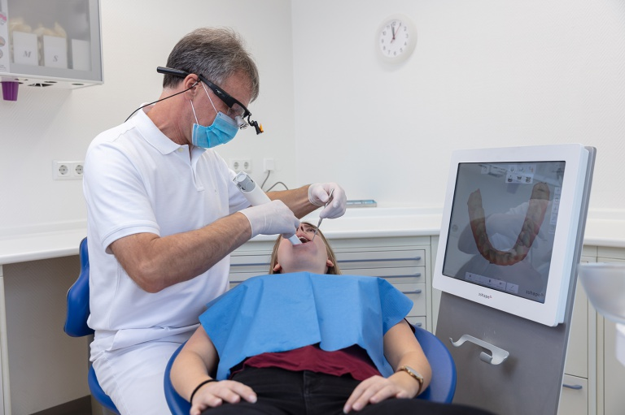

Ästhetische Zahnheilkunde
Schöne Zähne, perfekt in Form und Farbe, ohne Bohren oder Abschleifen. Hochästhetische Zahnkunststoffe ermöglichen heute durch Auftrag und Aufbau das Umformen und Optimieren der eigenen Zähne, ohne invasiv zu werden. Verfärbte Füllungen im Bereich der Front- und Seitenzähne können durch mehrfarbige Füllungskunststoffe ersetzt und nahezu unsichtbar gemacht werden.
